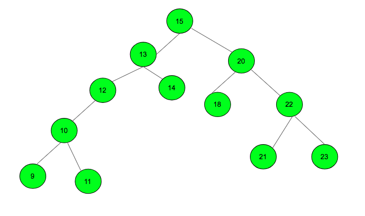

# 遊戲中的全服排行是怎麼實現的？
# 排行榜看似尋常，但蘊含許多設計哲學與巧思
現在大多數的遊戲都一定會有排行榜的功能，並且依照需求可能會有各種不同的限制。排行榜可以很有效的激發玩家的競爭心理，不僅僅增加遊戲的黏著度、也能夠使玩家更願意在遊戲中投資自己的角色或是帳號，如此便可直接或間接的提升玩家的消費意願。
今天想要來談談遊戲中的全服排行的技術實現。
可能會有人說：「這有什麼困難的，充其量不過就是將符合條件的玩家們進行排序罷了。」
這樣可以說對、也可以說不完全正確。
當遊戲規模不大時，其實真的隨便排排都可以妥妥的。但是當遊戲人數達到破十萬、百萬甚至以億為單位時，我們要直接排序也是可以，但是我們要考慮到玩家查看排行榜當下的使用者體驗。
是在玩家點開排行榜當下排序呢？
還是事前就先排序好，只等待玩家來查看？
若是玩家基數較大，排序必定需要花費時間。是應該要專門另外建立一個伺服器負責排行榜的排序？
還是固定在每天凌晨或是離峰時段直接使用服務器進行排行榜的運算？
如此，一個簡單的名次排序便派生了繁多的實作策略，來達成這種大數量的排序。
目前對於名次排序的策略，我大致整理出了以下幾種方式。每種策略各有優劣，可以依照自己的需求情境找尋適合自己的方式。重點是順利地達成目標。
# 方法一：
於 Database 中建立 user_score 資料表，以紀錄使用者分數。
依照需求使用 sql sort 或是自己寫簡易的排序演算法，並且取前 n 位，即可取得排行列表。
- 優點：簡單的 SQL 語法即可達成、單純的程式編寫，幾乎無任何技術要求。
- 缺點：性能不高、無法應付大量樣本數的數據。
# 方法二：
使用 Bucket Sort Algorithm 。
若有 k 名用戶，則使用大小為 k 的 array 作為積分 / 排名的對應關係進行儲存。例如，若某玩家的積分為 s 其對應的排名便為 rank[s] 。初始化時，我們只需要 trace 一次所有玩家的分數，便可以建立完這組積分與排名的關係。因此其複雜度為 O (n)。
當用戶的積分變更時，我們直接更新此用戶的積分，並且更新其於 array 的位置，意即：積分 s 的玩家變成 s+m 時，其儲存位置改為 rank[s+m] ，並且僅需要將 rank[s] 到 rank[s+m-1] 這段區間的玩家排名 +1 即可。複雜度依然為 O (n)。
- 優點：線性時間複雜度可完成排行、可支持大量筆數的玩家排名。
- 缺點：由於多少人便需要多少個 array 欄位，導致對於 memory 空間的需求大增。
# 方法三：
使用 Binary Sorting Tree Algorithm （BST）
BST 是一個有序二元樹狀結構。其特性為： 對於任意子樹，其左子樹中的節點(node)必定小於(或等於)根節點(root)；對於任意子數，其右子數中的節點(node)必定大於(或等於)根節點(root) 。
如此說明有點抽象，我們以下圖為例：

觀察此 BST 我們可以發現，此棵 BST 滿足 對於任何一棵子樹，都滿足「左邊的節點≦根節點≦右邊的節點」 這一條件。並且由於 Tree 的特性，我們在 trace 這棵樹的搜尋次數最差需要 n次 ，時間複雜度為 O(N) ，最好只需要 log(n)次 時間複雜度為 O (logN)。相關的程式碼可以到 這邊 參考。
- 優點：穩定的搜尋樹結構，不依賴
SQL存於 Memory 不會有讀寫緩慢問題。 - 缺點：需要自己實作、自己維護。相對耗費心力。
# 方法四：
使用 Redis 的 ZSET (Sort set) 作為排序手段
Redis 的 ZET 本身就是一個有序集合。所有新增或是更新的數值都會自動進行排序。並且擁有豐富的函式庫。
例如天生支援 ZRANK , ZSCORE 這類排行榜常使用的功能，在我看來根本就是為排行榜而設計的。
其中 redis 的 ZADD, ZREM 的時間複雜度為 O (M*log (N) )；ZRANK 的時間複雜度甚至在 O (log (N) )。
另外，每一個 ZSET 最大可以儲存 2³²-1 大約等於 40多億 比資料，基本上可以應付絕大多數的大數量成員問題了。
個人認為是最經濟實惠的做法。
- 優點：基於 Redis 的開發，基本上可以保證品質與穩定。
- 缺點：數據結構的存儲，需要受制於 Redis 一維的資料存儲結構。
# 總結
目前我於公司所開發的排行榜系統便是以 Redis 來實現的。 Redis 為程式上因為大量玩家所造成排序耗時的困境提供了簡單的解決方案。
今天整理了一些解決方案，每種的解決方案都有其中的優缺點，應該視實際業務上的需求而決定要使用哪種方案。最重要的是： 將業務完美完成 。